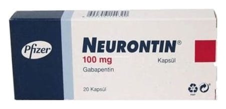

Neurontin 100 mg Kapsül, 20 Adet

Ne için kullanılır
KT · Bölüm 1• NEURONTİN diğer antiepileptik ilaçlar olarak adlandırılan ilaç grubundandır. Bu ilaçlar sara (epilepsi) ve sinir dokusunun hasarına bağlı ağrı (nöropatik ağrı) tedavisinde kullanılır. • NEURONTİN, mavi baskı ile kapak üzerinde “Neurontin 100 mg” ve gövde üzerinde “VLE” yazılı, beyaz opak sert jelatin kapsüldür. • NEURONTİN, 20 kapsül içeren ambalajlarda bulunur, her kapsül 100 mg gabapentin içermektedir. • NEURONTİN, başlangıçta beynin belirli kısımlarıyla sınırlı olan ve beynin diğer taraflarına yayılıp yayılmadığı belli olmayan değişik türlerdeki sara (epilepsi) nöbetlerinde kullanılır. Mevcut tedavi yeterli olmadığında, doktorunuz size ve 6 yaşından daha büyük olan çocuğunuza NEURONTİN reçete edebilir. Doktor aksini belirtmedikçe, siz veya 6 yaşından büyük çocuğunuz tarafından mevcut tedaviye ek olarak NEURONTİN kullanılmalıdır.
Ayrıca NEURONTİN 12 yaş üzeri çocukları ve yetişkinleri tedavi etmek için tek başına kullanılabilir. • NEURONTİN, sinir dokusunun hasarına bağlı ağrı (periferik nöropatik ağrı) tedavisinde kullanılan bir ilaçtır. Diyabet veya zona gibi pek çok farklı hastalık (temel olarak bacaklarda ve/veya kollarda görülen) periferik nöropatik ağrıya neden olabilir. Ağrı hissi; sıcak, yakıcı, zonklama, çarpıntı, ateş, bıçak saplanması hissi gibi, acı, kramp girmesi, ağrı , karıncalanma, hissizlik, uyuşma, batma ve donma gibi çeşitli şekillerde tanımlanabilir.